Beauty
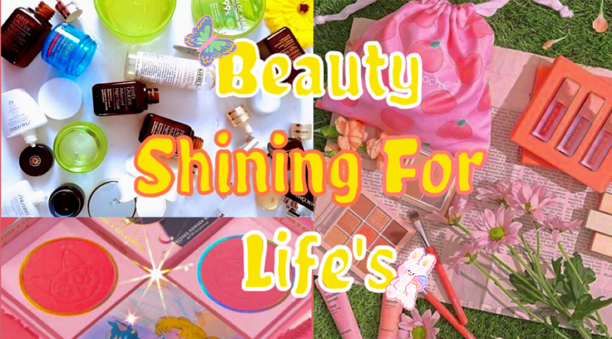What is Cosmetics
Cosmetics are used to beautify, maintain or change the appearance Cosmetics are products used to improve physical appearance in terms of cleanliness and appearance. This name applies to products for topical use, that is, products for hair, skin, nails and mouth. Cosmetics contain a mixture of 15 to 50 ingredients. The amount and type of substances used will depend on the type of cosmetics, the body part that will be used in it and its service life (may be as long as 3 months to 3 years). Generally, the most common ingredients in cosmetics are as follows: Water: Used in liquid products. Grease: Used in creams or crayons. Alcohol: Contains certain minerals. Paint: Give color. Thickener: To improve consistency. preservative:
The history of cosmetics
In the past, people would apply animal fats to the skin to make their skin color look healthy and shiny. This is also the earliest skin care behavior. Early skin care products and cosmetics originated in the chemical industry. At that time, it was difficult to extract naturally from plants, and the petrochemical synthesis industry was very developed. Therefore, the raw materials of many skin care products and cosmetics come from the chemical industry, and there are still many international and domestic brands that still use the raw materials of that era. The price is low, the raw materials are relatively simple, and the cost is low. Therefore, the era of mineral oil is also the era of daily chemicals.
Types of cosmetics
-what the different types of cosmetics?
Although there are a large number of different cosmetics used for a variety of different purposes, all cosmetics are usually for external use. These products can be used on the face (skin, lips, eyebrows and eyes), body (skin, especially hands and nails) and hair. These products can be used for skin care, personal care or appearance modification. The subset of cosmetics referred to by cosmetics mainly refers to products containing color pigments designed to change the appearance of the wearer; some manufacturers only distinguish between "decorative" cosmetics and "care" cosmetics for skin care and personal care. Most cosmetics are also distinguished by their applicable body parts. Cosmetics for the face and eyes are usually applied with a brush, makeup sponge or fingertips.
Skin care products and Cleaning
Creams, lotions, Cosmetic oils, Facial mask, Facial cleanser, Shampoo, Hair care, Hair stabilization, Hairdressing

Makeup
Sunscree, Eye shadow, Eyeliner, Eyelash curler, Mascara, Blush, Lip liner, Lip gloss, Lip gloss or Lipstik
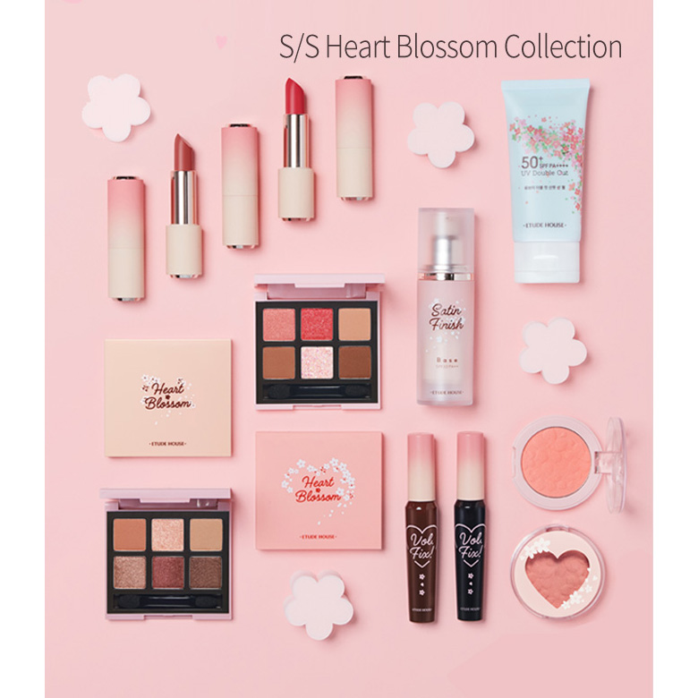 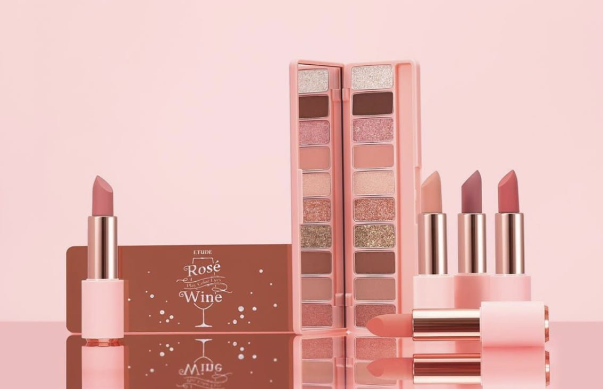Know your skin
Different skins are suitable for different cosmetics. First of all, you must clarify your skin type. We can prescribe the right medicine and choose the right cosmetics. Measuring the skin: Under normal circumstances, by observing the size of the pores, the amount of oil, whether it is shiny, how elastic the skin is, whether it is allergic to cosmetics, and comparing it with various skins, you can almost judge your skin type.
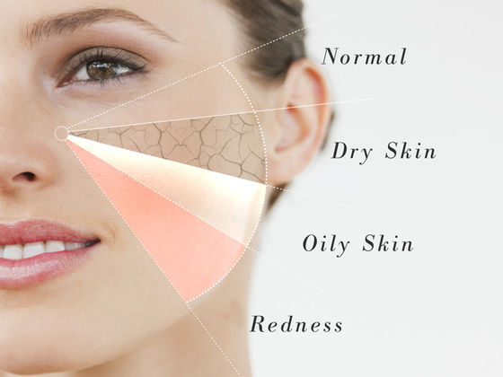Skin types
~ Oily skin
Oily skin is produced by the strong secretion of human sebaceous glands, and the characteristics of sebaceous glands in the skin are determined by genetic factors. For oily skin, the secretion function of sebaceous glands is relatively strong, the face is greasy, not easy to clean, and has a shiny appearance that affects the appearance; at the same time, corresponding facial skin diseases such as acne are prone to occur. Seborrheic dermatitis and so on. Controlling the excessive secretion of sebaceous glands and reducing the symptoms of oil production are the keys to maintaining healthy skin.

~Normal skin
Normal skin is a healthy and ideal skin with moderate sebum secretion, between dry and oily skin, and not sensitive to external stimuli. Its pH value is 5.6-7. Normal skin is susceptible to seasonal changes. It is drier in winter and greasy in summer.
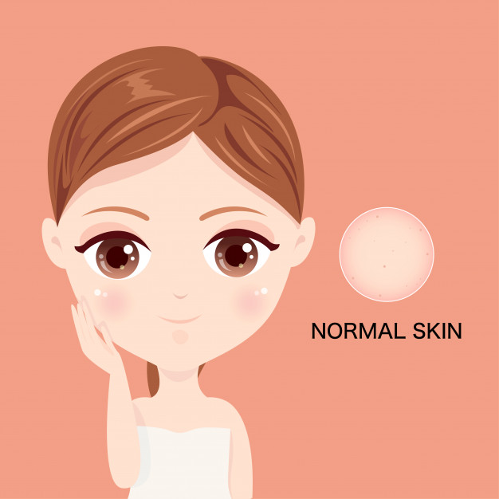~ Dry skin
Dry skin refers to skin with less than 10% moisture in the stratum corneum due to increased transepidermal water loss due to reduced sebaceous gland secretion and damage to the skin barrier. Its surface skin is lighter and thinner, acne and acne are rarely seen on the skin, and the pores are not obvious. Dry skin is divided into two conditions: dehydration and oil shortage.

~ combination skin
There are more and more people with combination skin in modern people. Except for some people who are born with combination skin, there are also some people who have mixed skin due to stress. There are also normal skin or oily skin in the past. It will become mixed skin with age and environment. Combination dry skin has smaller pores, some fine lines, and the face is dull. The pores of mixed oily skin are more obvious, the T-shaped part is prone to oil, the pores are large, the cheeks are dry, and there are few fine lines on the face.
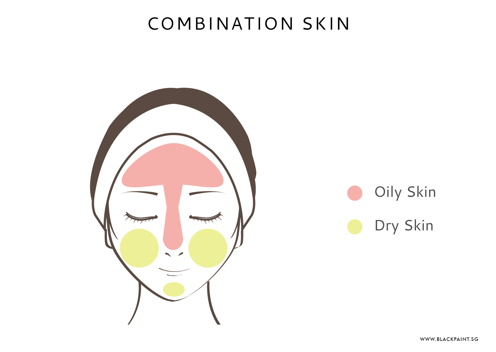~ sensitive skin
The exact meaning of sensitive skin has not yet been agreed. It is generally believed that sensitive skin is a highly intolerable skin condition, which is prone to subjective symptoms such as tingling, burning, tightness, and itching due to various factors. The skin appearance is normal or accompanied by multifactor syndrome. Mild scaling, erythema, and dryness

what are percent of the people can't without cosmetics?
Beauty trap: 70% of women never go out without makeup.
Women have a strong motivation to put on makeup in the workplace. On the social side, makeup can not only increase perceived attractiveness, but also increase women's self-confidence. If women believe that makeup will increase their attractiveness, then it is easy to understand why they think makeup is better. Appearance can have a powerful effect on self-esteem. Obviously, women like the benefits of makeup. It can increase their perceived attractiveness, give them more confidence, and create a good impression in work and social environments.
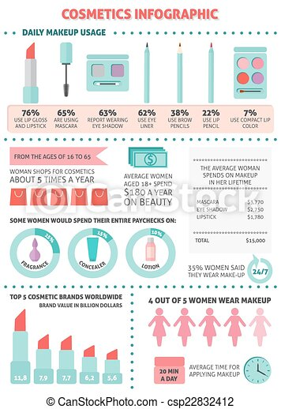The best reasons and benefits of makeup
Makeup helps to enhance your appearance. When you put on makeup, you will have more fun in the day. Make you look perfect in the photo. When you use cosmetics, you can get a better complexion
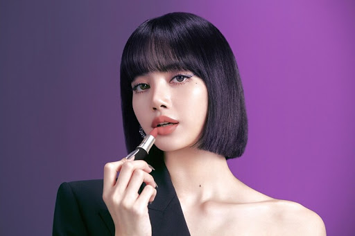
Brand
These beauty brands prioritize the use of the best ingredients provided by nature to create high-performance cosmetics that even makeup artists love.
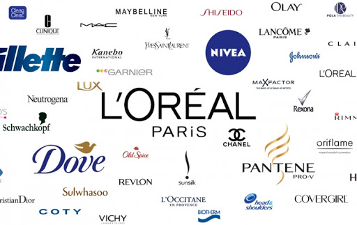
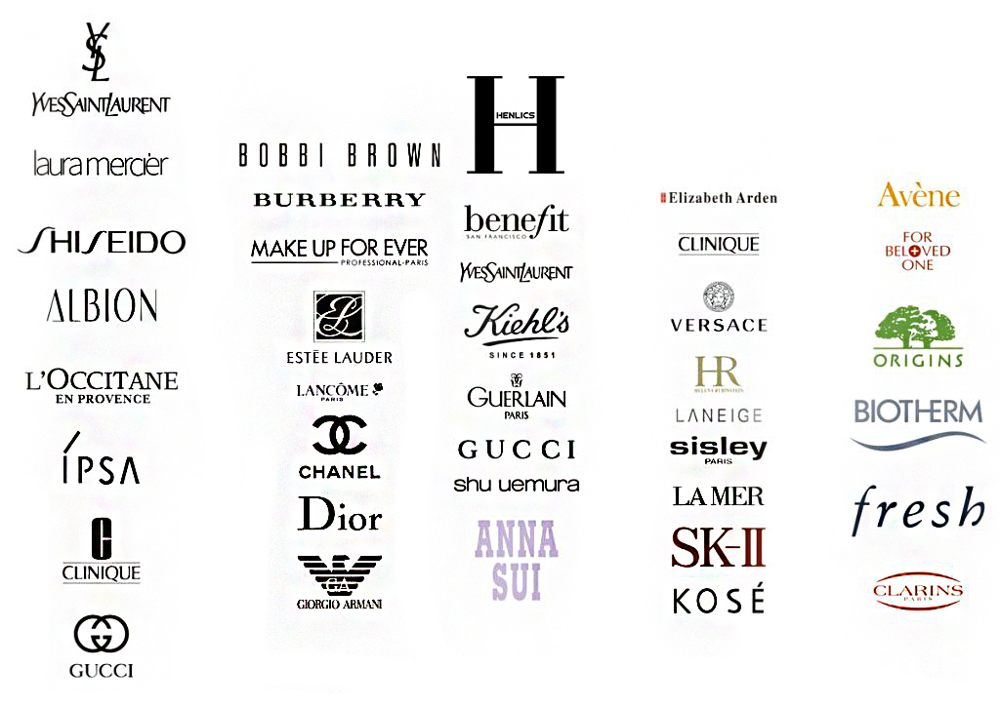
These beauty brands prioritize the use of the best ingredients provided by nature to create high-performance cosmetics that even makeup artists love.
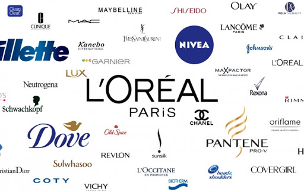 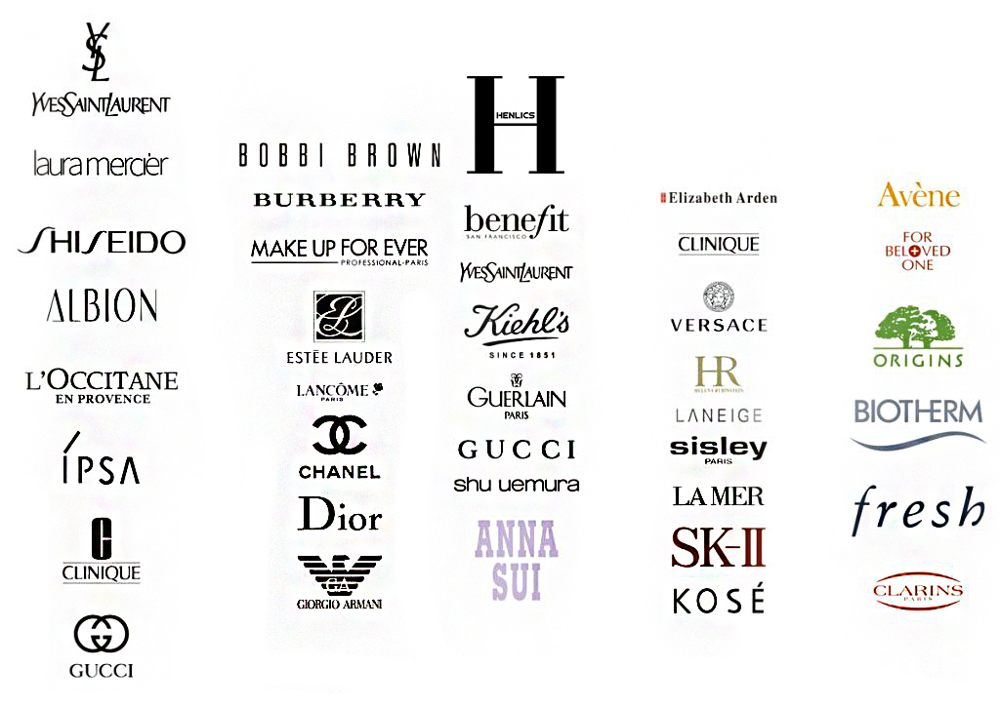